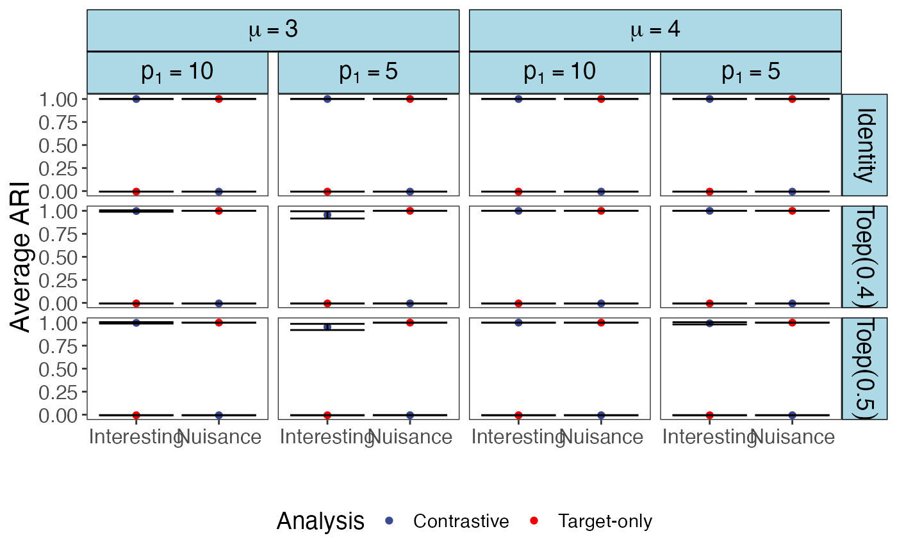

sim_CSC.RdThis function performs simulation to prove the interesting of hidden clusters by using cPCA and eta tuning algorithm. Same as in the example of Section 2, we consider two target clusters and two nuisance clusters
sim_CSC(
n11,
n12,
n21,
n22,
m1tilde,
m2tilde,
mu1,
mu2,
theta1,
theta2,
p1,
p2,
sigma_t = 1,
sigma_a = 1,
Sigma_t = NULL,
Sigma_a = NULL,
eta,
repetition = 10,
save_plot = FALSE
)number of target samples in interesting cluster 1 and nuisance cluster 1.
number of target samples in interesting cluster 1 and nuisance cluster 2.
number of target samples in interesting cluster 2 and nuisance cluster 1.
number of target samples in interesting cluster 2 and nuisance cluster 2.
number of ancillary samples in nuisance cluster 1.
number of ancillary samples in nuisance cluster 2.
non-zero values in mu_t1.
non-zero values in mu_t2.
non-zero values in theta_1.
non-zero values in theta_2
number of non-zero elements in mu_t1 and mu_t2.
number of non-zero elements in theta_1 and theta_2.
standard deviation of the uncorrelated errors in target group.
standard deviation of the uncorrelated errors in ancillary group.
the error covariance matrix in target group, if is NULL, use standard deviation specified and assume uncorrelation.
the error covariance matrix in ancillary group, if is NULL, use standard deviation specified and assume uncorrelation.
if eta is a vector, eta_tuning algorithm will be called to select optimal eta; if a number, eta will be used.
number of replications of the simulation.
logical, whether save the score plot and loading plot for the first replication.
A data frame containing the selected optimal eta, the four metrics values.
library(CEA)
library(ggplot2)
library(tidyverse)
library(ggsci)
library(ggh4x)
#>
#> Attaching package: ‘ggh4x’
#> The following object is masked from ‘package:ggplot2’:
#>
#> guide_axis_logticks
set.seed(111)
mu2_candidates <- c(1, 2)
p1_candidates <- c(5, 10)
eta_range <- seq(0.1, 50, 0.2)
Sigmat_candidates <- c("Identity", "Toep(0.4)", "Toep(0.5)")
results <- setNames(data.frame(matrix(ncol = 8, nrow = 0)),
c("ARI_ctst_interesting", "ARI_ctst_nuisance",
"ARI_trt_interesting", "ARI_trt_nuisance","eta",
"mu2", "p1", "Sigmat"))
for (mu2 in mu2_candidates) {
for (p1 in p1_candidates) {
for(Sigmat in Sigmat_candidates){
p2 <- 10
p <- p1+p2
Sigma_t <- case_when(Sigmat == "Identity" ~ diag(1, p),
Sigmat == "Toep(0.4)" ~ toeplitz(0.4^(0:(p-1))),
Sigmat == "Toep(0.5)" ~ toeplitz(0.5^(0:(p-1))))
res <- sim_CSC(n11 = 50, n12 = 25, n21 = 55, n22 = 30, m1tilde = 20, m2tilde = 30,
mu1 = 5, mu2 = mu2, theta1 = -5, theta2 = 6, p1 = p1, p2 = p2,
sigma_t = 1, sigma_a = 1,
Sigma_t = Sigma_t, Sigma_a = NULL,
eta = eta_range, repetition = 10, save_plot = FALSE)
res$mu2 <- mu2
res$mu <- abs(mu2-5)
res$p1 <- p1
res$Sigmat <- Sigmat
results <- rbind(results, res)
}
}
}
#> Use optimal eta: 2.5
#> Use optimal eta: 2.1
#> Use optimal eta: 2.1
#> Use optimal eta: 6.7
#> Use optimal eta: 6.1
#> Use optimal eta: 1.5
#> Use optimal eta: 4.3
#> Use optimal eta: 3.3
#> Use optimal eta: 4.3
#> Use optimal eta: 5.3
#> Use optimal eta: 4.1
#> Use optimal eta: 2.3
#> Use optimal eta: 8.1
#> Use optimal eta: 5.3
#> Use optimal eta: 5.5
#> Use optimal eta: 8.5
#> Use optimal eta: 6.9
#> Use optimal eta: 3.1
#> Use optimal eta: 6.5
#> Use optimal eta: 1.9
#> Use optimal eta: 20.9
#> Use optimal eta: 7.7
#> Use optimal eta: 22.3
#> Use optimal eta: 7.7
#> Use optimal eta: 4.3
#> Use optimal eta: 3.9
#> Use optimal eta: 1.3
#> Use optimal eta: 7.9
#> Use optimal eta: 1.5
#> Use optimal eta: 7.3
#> Use optimal eta: 4.1
#> Use optimal eta: 7.7
#> Use optimal eta: 8.5
#> Use optimal eta: 1.1
#> Use optimal eta: 10.1
#> Use optimal eta: 5.9
#> Use optimal eta: 1.3
#> Use optimal eta: 11.3
#> Use optimal eta: 0.9
#> Use optimal eta: 4.1
#> Use optimal eta: 1.7
#> Use optimal eta: 17.1
#> Use optimal eta: 0.9
#> Use optimal eta: 13.5
#> Use optimal eta: 10.9
#> Use optimal eta: 16.5
#> Use optimal eta: 14.7
#> Use optimal eta: 6.7
#> Use optimal eta: 7.7
#> Use optimal eta: 3.9
#> Use optimal eta: 7.3
#> Use optimal eta: 2.9
#> Use optimal eta: 5.1
#> Use optimal eta: 15.7
#> Use optimal eta: 4.5
#> Use optimal eta: 2.5
#> Use optimal eta: 2.7
#> Use optimal eta: 1.9
#> Use optimal eta: 4.1
#> Use optimal eta: 6.3
#> Use optimal eta: 2.3
#> Use optimal eta: 3.5
#> Use optimal eta: 4.1
#> Use optimal eta: 2.5
#> Use optimal eta: 2.3
#> Use optimal eta: 3.7
#> Use optimal eta: 2.1
#> Use optimal eta: 3.5
#> Use optimal eta: 2.5
#> Use optimal eta: 3.5
#> Use optimal eta: 8.3
#> Use optimal eta: 4.7
#> Use optimal eta: 5.7
#> Use optimal eta: 6.1
#> Use optimal eta: 2.1
#> Use optimal eta: 3.7
#> Use optimal eta: 10.1
#> Use optimal eta: 4.5
#> Use optimal eta: 8.9
#> Use optimal eta: 4.5
#> Use optimal eta: 3.3
#> Use optimal eta: 2.9
#> Use optimal eta: 1.1
#> Use optimal eta: 2.5
#> Use optimal eta: 1.7
#> Use optimal eta: 5.9
#> Use optimal eta: 6.7
#> Use optimal eta: 21.1
#> Use optimal eta: 6.1
#> Use optimal eta: 2.7
#> Use optimal eta: 2.1
#> Use optimal eta: 6.7
#> Use optimal eta: 0.9
#> Use optimal eta: 1.9
#> Use optimal eta: 1.9
#> Use optimal eta: 3.9
#> Use optimal eta: 5.7
#> Use optimal eta: 4.5
#> Use optimal eta: 5.5
#> Use optimal eta: 7.9
#> Use optimal eta: 5.9
#> Use optimal eta: 8.1
#> Use optimal eta: 3.3
#> Use optimal eta: 4.1
#> Use optimal eta: 2.5
#> Use optimal eta: 7.5
#> Use optimal eta: 2.1
#> Use optimal eta: 7.9
#> Use optimal eta: 1.3
#> Use optimal eta: 5.5
#> Use optimal eta: 30.1
#> Use optimal eta: 6.7
#> Use optimal eta: 21.3
#> Use optimal eta: 2.5
#> Use optimal eta: 1.7
#> Use optimal eta: 5.5
#> Use optimal eta: 2.3
#> Use optimal eta: 2.5
#> Use optimal eta: 6.9
#> Use optimal eta: 12.7
plot_results <- pivot_longer(results, 1:4, names_to = "Type", values_to = "ARI")
plot_results$Analysis <- sapply(plot_results$Type, function(x){strsplit(x,"_")[[1]][2]})
plot_results$Cluster <- sapply(plot_results$Type, function(x){strsplit(x,"_")[[1]][3]})
plot_results$Analysis <- ifelse(plot_results$Analysis=="ctst","Contrastive","Target-only")
plot_results$Cluster <- ifelse(plot_results$Cluster=="interesting","Interesting","Nuisance")
plot_results$eta <- paste("eta==", plot_results$eta, sep = "")
plot_results$mu <- paste("mu==", plot_results$mu, sep = "")
plot_results$p1 <- paste("p[1]==", plot_results$p1, sep = "")
plot_results <- plot_results %>% group_by(mu, p1, Sigmat, Cluster, Analysis) %>% summarise(Average_ARI = mean(ARI), SE_ARI = sd(ARI))
#> `summarise()` has grouped output by 'mu', 'p1', 'Sigmat', 'Cluster'. You can
#> override using the `.groups` argument.
print(knitr::kable(plot_results, format = "markdown"))
#>
#>
#> |mu |p1 |Sigmat |Cluster |Analysis | Average_ARI| SE_ARI|
#> |:-----|:--------|:---------|:-----------|:-----------|-----------:|---------:|
#> |mu==3 |p[1]==10 |Identity |Interesting |Contrastive | 1.00000| 0.0000000|
#> |mu==3 |p[1]==10 |Identity |Interesting |Target-only | -0.00610| 0.0000000|
#> |mu==3 |p[1]==10 |Identity |Nuisance |Contrastive | -0.00610| 0.0000000|
#> |mu==3 |p[1]==10 |Identity |Nuisance |Target-only | 1.00000| 0.0000000|
#> |mu==3 |p[1]==10 |Toep(0.4) |Interesting |Contrastive | 0.99750| 0.0079057|
#> |mu==3 |p[1]==10 |Toep(0.4) |Interesting |Target-only | -0.00610| 0.0000000|
#> |mu==3 |p[1]==10 |Toep(0.4) |Nuisance |Contrastive | -0.00610| 0.0000000|
#> |mu==3 |p[1]==10 |Toep(0.4) |Nuisance |Target-only | 1.00000| 0.0000000|
#> |mu==3 |p[1]==10 |Toep(0.5) |Interesting |Contrastive | 0.99750| 0.0079057|
#> |mu==3 |p[1]==10 |Toep(0.5) |Interesting |Target-only | -0.00610| 0.0000000|
#> |mu==3 |p[1]==10 |Toep(0.5) |Nuisance |Contrastive | -0.00610| 0.0000000|
#> |mu==3 |p[1]==10 |Toep(0.5) |Nuisance |Target-only | 1.00000| 0.0000000|
#> |mu==3 |p[1]==5 |Identity |Interesting |Contrastive | 1.00000| 0.0000000|
#> |mu==3 |p[1]==5 |Identity |Interesting |Target-only | -0.00610| 0.0000000|
#> |mu==3 |p[1]==5 |Identity |Nuisance |Contrastive | -0.00610| 0.0000000|
#> |mu==3 |p[1]==5 |Identity |Nuisance |Target-only | 1.00000| 0.0000000|
#> |mu==3 |p[1]==5 |Toep(0.4) |Interesting |Contrastive | 0.95559| 0.0395053|
#> |mu==3 |p[1]==5 |Toep(0.4) |Interesting |Target-only | -0.00610| 0.0000000|
#> |mu==3 |p[1]==5 |Toep(0.4) |Nuisance |Contrastive | -0.00588| 0.0002251|
#> |mu==3 |p[1]==5 |Toep(0.4) |Nuisance |Target-only | 1.00000| 0.0000000|
#> |mu==3 |p[1]==5 |Toep(0.5) |Interesting |Contrastive | 0.95303| 0.0335268|
#> |mu==3 |p[1]==5 |Toep(0.5) |Interesting |Target-only | -0.00610| 0.0000000|
#> |mu==3 |p[1]==5 |Toep(0.5) |Nuisance |Contrastive | -0.00560| 0.0006667|
#> |mu==3 |p[1]==5 |Toep(0.5) |Nuisance |Target-only | 1.00000| 0.0000000|
#> |mu==4 |p[1]==10 |Identity |Interesting |Contrastive | 1.00000| 0.0000000|
#> |mu==4 |p[1]==10 |Identity |Interesting |Target-only | -0.00610| 0.0000000|
#> |mu==4 |p[1]==10 |Identity |Nuisance |Contrastive | -0.00610| 0.0000000|
#> |mu==4 |p[1]==10 |Identity |Nuisance |Target-only | 1.00000| 0.0000000|
#> |mu==4 |p[1]==10 |Toep(0.4) |Interesting |Contrastive | 1.00000| 0.0000000|
#> |mu==4 |p[1]==10 |Toep(0.4) |Interesting |Target-only | -0.00610| 0.0000000|
#> |mu==4 |p[1]==10 |Toep(0.4) |Nuisance |Contrastive | -0.00610| 0.0000000|
#> |mu==4 |p[1]==10 |Toep(0.4) |Nuisance |Target-only | 1.00000| 0.0000000|
#> |mu==4 |p[1]==10 |Toep(0.5) |Interesting |Contrastive | 1.00000| 0.0000000|
#> |mu==4 |p[1]==10 |Toep(0.5) |Interesting |Target-only | -0.00610| 0.0000000|
#> |mu==4 |p[1]==10 |Toep(0.5) |Nuisance |Contrastive | -0.00610| 0.0000000|
#> |mu==4 |p[1]==10 |Toep(0.5) |Nuisance |Target-only | 1.00000| 0.0000000|
#> |mu==4 |p[1]==5 |Identity |Interesting |Contrastive | 1.00000| 0.0000000|
#> |mu==4 |p[1]==5 |Identity |Interesting |Target-only | -0.00610| 0.0000000|
#> |mu==4 |p[1]==5 |Identity |Nuisance |Contrastive | -0.00610| 0.0000000|
#> |mu==4 |p[1]==5 |Identity |Nuisance |Target-only | 1.00000| 0.0000000|
#> |mu==4 |p[1]==5 |Toep(0.4) |Interesting |Contrastive | 1.00000| 0.0000000|
#> |mu==4 |p[1]==5 |Toep(0.4) |Interesting |Target-only | -0.00610| 0.0000000|
#> |mu==4 |p[1]==5 |Toep(0.4) |Nuisance |Contrastive | -0.00610| 0.0000000|
#> |mu==4 |p[1]==5 |Toep(0.4) |Nuisance |Target-only | 1.00000| 0.0000000|
#> |mu==4 |p[1]==5 |Toep(0.5) |Interesting |Contrastive | 0.99250| 0.0120761|
#> |mu==4 |p[1]==5 |Toep(0.5) |Interesting |Target-only | -0.00610| 0.0000000|
#> |mu==4 |p[1]==5 |Toep(0.5) |Nuisance |Contrastive | -0.00607| 0.0000949|
#> |mu==4 |p[1]==5 |Toep(0.5) |Nuisance |Target-only | 1.00000| 0.0000000|
ggplot(plot_results, aes(x = Cluster, y = Average_ARI))+
geom_point(aes(color = Analysis), stat="identity", position ="dodge")+
geom_errorbar(aes(ymin = Average_ARI - SE_ARI, ymax = Average_ARI + SE_ARI), size = 0.5) +
facet_nested(Sigmat ~ mu + p1, labeller = label_parsed)+
labs(x = "", y="Average ARI")+
theme_bw()+
theme(
panel.grid = element_blank(),
strip.background = element_rect(fill = "lightblue", color = "black"),
strip.text = element_text(color = "black", face = "bold", size = 14),
text = element_text(size = 14), # Adjust text size
axis.title = element_text(size = 16), # Adjust axis title size
axis.text = element_text(size = 12), # Adjust axis text size
legend.position = "bottom"
)+
scale_color_aaas()
#> Warning: Using `size` aesthetic for lines was deprecated in ggplot2 3.4.0.
#> ℹ Please use `linewidth` instead.
#> Warning: Width not defined
#> ℹ Set with `position_dodge(width = ...)`
